Công cụ Multi-Blob là công cụ Blob hỗ trợ tính toán Blob đồng thời trên nhiều vùng ROI (Region of Interest) và xuất ra nhiều kết quả tương ứng.
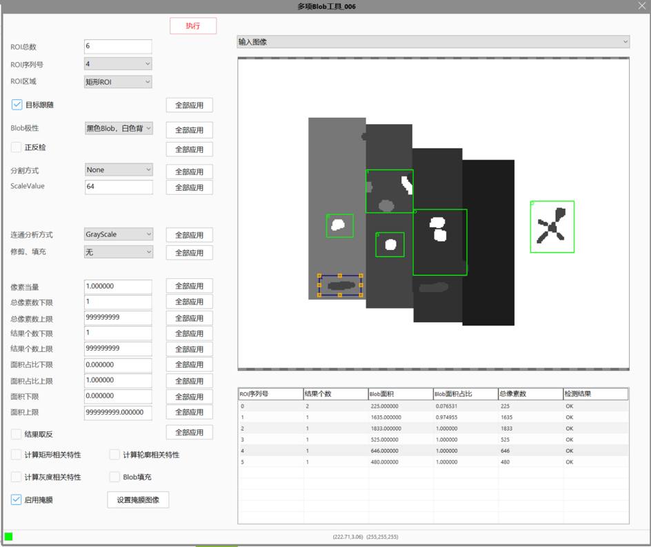
Công cụ Blob có thể trích xuất các đường bao đặc trưng (feature contours) khép kín của hình ảnh. Thông qua thiết lập tham số và bộ lọc, công cụ sẽ trích xuất các vùng khép kín đáp ứng điều kiện. Khi cần trích xuất đồng thời nhiều vùng khác nhau, công cụ Blob thông thường không thể đáp ứng nhu cầu, lúc đó cần sử dụng công cụ Multi-Blob để hỗ trợ tính toán Blob trên nhiều khu vực.
Công cụ Blob thu thập các đường bao đặc trưng hình học của mục tiêu thông qua việc thiết lập tham số. Các đặc trưng hình học này có thể thực hiện các phép biến đổi như xoay, thu phóng (scaling) một cách chính xác và nhanh chóng, đồng thời có khả năng thích nghi tốt với các biến đổi mức xám tuyến tính và phi tuyến tính của hình ảnh.
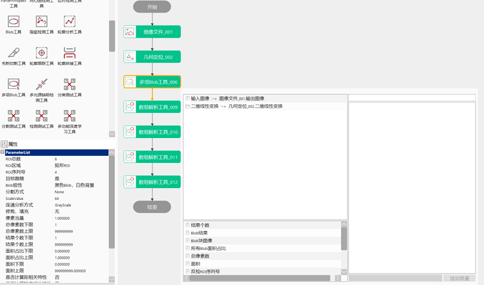
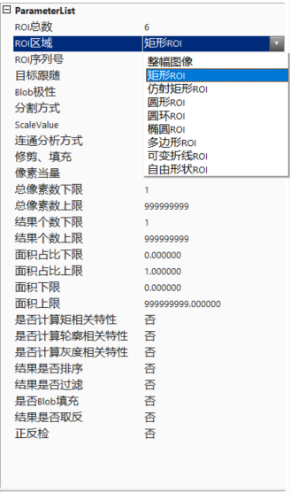
Tổng số ROI
Thiết lập số lượng ROI cho công cụ Multi-Blob, phạm vi giá trị từ 1~50. Khi kiểu ROI được đặt là Toàn bộ hình ảnh (Whole Image), tổng số ROI cố định là 1.
Số thứ tự ROI (Index)
Thực hiện thiết lập tham số cho ROI theo số thứ tự (ID) được chỉ định.
Vùng ROI
Thiết lập kiểu vùng ROI để tính toán Blob, bao gồm 9 loại: Toàn bộ hình ảnh, ROI Hình chữ nhật, ROI Hình chữ nhật Affine, ROI Hình tròn, ROI Hình vành khăn, ROI Hình Ellipse, ROI Đa giác, ROI Đường gấp khúc thay đổi và Hình dạng tự do (Freeform).
Bám đuổi mục tiêu (Fixture Roll)
Thuộc tính bám đuổi mục tiêu dùng để thiết lập xem vùng ROI của công cụ Multi-Blob có bám theo phép biến đổi tuyến tính 2D (2D Linear Transformation) hay không. Nút "Áp dụng tất cả" có thể đồng bộ giá trị thiết lập cho mọi ROI, các chức năng tham số khác vẫn giữ nguyên.
Có: Công cụ Blob có thể liên kết với phép biến đổi tuyến tính 2D, vùng ROI sẽ di chuyển theo phép biến đổi đó (ví dụ: kết quả đầu ra từ công cụ Định vị hình học - Geometric Matching).
Không: Công cụ Blob không liên kết với phép biến đổi tuyến tính 2D, vùng ROI có thể được chỉ định động theo thời gian thực, nghĩa là tọa độ ROI được thiết lập ở đâu thì vị trí ROI sẽ nằm tại đó.
Cực tính Blob (Polarity)
Blob đen, nền trắng: Phát hiện vùng tối trên nền sáng.
Blob trắng, nền đen: Phát hiện vùng sáng trên nền tối.
Kiểm tra thuận nghịch (Dual Polarity)
Khi chọn mục này, công cụ sẽ đồng thời phát hiện cả vùng đen và vùng trắng. Vùng được chọn kiểm tra thuận nghịch sẽ xuất ra hai nhóm kết quả dữ liệu: phát hiện thuận và phát hiện nghịch.
Phương pháp phân ngưỡng (Segmentation)
None (Nhập trực tiếp): Đối với hình ảnh đã được phân đoạn, thực hiện chuẩn hóa trọng số pixel thông qua hệ số tỷ lệ (Scale Factor) để thuận tiện cho việc tính toán các đặc trưng (features) sau này.
Hard Threshold (Phân ngưỡng cứng): Nguyên lý phân ngưỡng cứng khá đơn giản, các pixel có mức xám nhỏ hơn ngưỡng được coi là mục tiêu, và các pixel có mức xám lớn hơn hoặc bằng ngưỡng được coi là nền, hoặc ngược lại. Hình 2 là ví dụ về phân ngưỡng cứng, trong đó ngưỡng được đặt là 100, nghĩa là các pixel có mức xám dưới 100 được đánh dấu là mục tiêu, còn các pixel từ 100 trở lên được đánh dấu là nền.
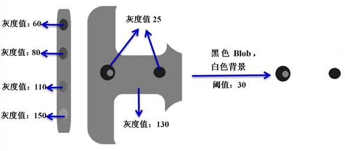
Soft Threshold (Phân ngưỡng mềm): Để loại bỏ hoặc giảm thiểu sai số lượng tử hóa không gian do phân ngưỡng cứng gây ra, có thể sử dụng phân ngưỡng mềm. Thông qua phân ngưỡng mềm, hình ảnh mức xám có thể được chuyển đổi thành hình ảnh trọng số (weight image). Khác với ngưỡng cứng, ngưỡng mềm thực chất là một chuỗi ngưỡng: pixel có giá trị xám lớn hơn chuỗi ngưỡng sẽ có trọng số là 1.0 (mục tiêu), nhỏ hơn chuỗi ngưỡng sẽ có trọng số là 0.0 (nền), và các pixel nằm giữa chuỗi ngưỡng sẽ có trọng số từ 0.0 đến 1.0.
Trong phân ngưỡng mềm liên quan đến 4 tham số: Ngưỡng cao (High Threshold), Ngưỡng thấp (Low Threshold), Độ mềm (Softness - mức độ chuyển tiếp trong chuỗi ngưỡng) với phạm vi giá trị từ [0, 254], và cực tính. Hình 3 là sơ đồ minh họa tham số ngưỡng mềm.
Phương pháp phân tích liên thông (Connectivity)
Whole Image: Tất cả các pixel mục tiêu sau khi phân đoạn được đánh dấu là một Blob duy nhất. Ngay cả khi hình ảnh tồn tại nhiều vùng mục tiêu không liên thông, phân tích liên thông Whole Image vẫn coi chúng là một Blob, tất cả các đặc trưng được tính toán dựa trên toàn bộ pixel mục tiêu trong ảnh.
Gray Scale: Đánh dấu các pixel mục tiêu trong ảnh sau phân đoạn thành nhiều vùng liên thông riêng biệt. Các vùng mục tiêu được phân tích theo kiểu liên thông 8 (8-connectivity).
Labeled: Trong ứng dụng xử lý ảnh, đôi khi cần phân đoạn nội dung ảnh thành nhiều tập hợp khác nhau thay vì chỉ đơn giản là mục tiêu và nền. Ví dụ: phân đoạn ảnh thành 4 loại pixel, mỗi loại đại diện cho một dải mức xám khác nhau, được biểu thị bằng một giá trị Label duy nhất. Phân tích liên thông Labeled sẽ gộp các pixel có cùng giá trị Label thành một vùng liên thông. Trong kiểu này không có khái niệm vùng mục tiêu và vùng nền, tất cả các vùng đều được tính theo liên thông 6 (6-connectivity).
Đặc trưng (Feature Measurements)
Trong phân tích Blob, các đặc trưng có thể được chia thành bốn loại từ góc độ tính toán: đặc trưng cơ bản, đặc trưng liên quan đến momen (matrix/moment), đặc trưng liên quan đến đường bao (contour) và đặc trưng liên quan đến mức xám. Sơ đồ minh họa Blob và các đặc trưng của nó được hiển thị trong Hình 4.
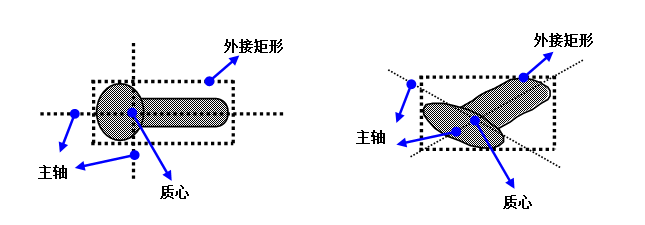
Đặc trưng cơ bản
Đặc trưng 1: Nhãn liên thông (ConnectivityLabel). Là nhãn loại của vùng. Đối với ảnh mức xám, Blob được gán nhãn là 1, Hole (lỗ) được gán là 0. Đối với ảnh gán nhãn (Labeled Image), đây chính là nhãn của Blob. Nhãn liên thông có thể được thiết lập sau khi hoàn tất việc gán nhãn các thành phần liên thông.
Đặc trưng 2: Diện tích (Area). Tổng trọng số của tất cả các pixel không bằng 0 trong Blob.
Đặc trưng 3: Tâm khối (Center of Mass) X, Y. Tâm khối là điểm cân bằng của Blob. Tâm khối của Blob không nhất thiết phải nằm bên trong Blob. Như minh họa trong Hình 5.
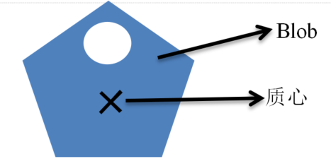
Đặc trưng 4: Hình chữ nhật ngoại tiếp tối thiểu theo tọa độ (Bounding Box). Như hiển thị trong Hình 6, vùng khả dụng của nó được mô tả hoàn toàn bởi tọa độ x min, x max, y min và y max.
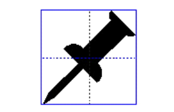
Đặc trưng 5: Hình chữ nhật ngoại tiếp tối thiểu theo trục chính (Oriented Bounding Box). Như hiển thị trong Hình 7, trong đó gốc tọa độ của hệ tọa độ ảnh gốc được tịnh tiến đến tâm khối của vùng, và xoay theo chiều kim đồng hồ một góc  là góc của trục dài của vùng.
là góc của trục dài của vùng.
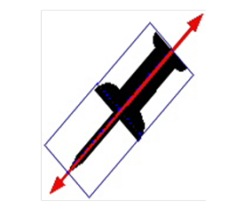
Đặc trưng 6: Số lượng nút con (NumChildren). Số lượng các đối tượng con trước khi thực hiện các thao tác cắt tỉa hoặc lấp đầy.
Đặc trưng 7: Độ dài đường chéo của hình chữ nhật ngoại tiếp tối thiểu.
Đặc trưng 8: Độ lệch từ tâm khối đến tâm của hình chữ nhật ngoại tiếp tối thiểu.
Đặc trưng liên quan đến Momen
Đặc trưng 9: Momen quán tính bậc hai đối với trục tọa độ, tức là momen quán tính bậc hai đối với trục đi qua tâm khối và song song với trục tọa độ, như hiển thị trong Hình 8.
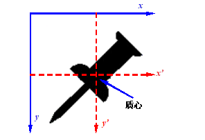
Đặc trưng 10: Hướng (Angle). Là trục tương ứng với momen quán tính bậc hai nhỏ nhất. Như hiển thị trong Hình 9.
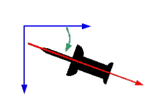
Đặc trưng 11: Momen quán tính bậc hai đối với trục chính. Bao gồm momen quán tính bậc hai nhỏ nhất và lớn nhất.
Đặc trưng 12: Độ kéo giãn (Elongation). Tỷ lệ giữa momen quán tính bậc hai lớn nhất và nhỏ nhất. Độ kéo giãn của hình tròn là 1, đây là giới hạn dưới của đặc trưng này.
Đặc trưng 13: Độ đặc (Density). Mô tả mức độ tập trung của các điểm bên trong Blob, định nghĩa bằng Tổng diện tích / Diện tích hình chữ nhật ngoại tiếp trục chính. Phạm vi giá trị là (0,1].
Đặc trưng 14: Độ trầy xước (Scratchness). Tỷ lệ giữa bình phương chiều rộng hình chữ nhật ngoại tiếp trục chính và diện tích, phản ánh khả năng thuộc về vết trầy xước. Phạm vi giá trị là (0,+∞), giá trị này càng lớn thì càng có khả năng là vết trầy xước.
Đặc trưng 15: Độ lệch tâm (Eccentricity). Chỉ độ tròn của vật thể. Nếu độ lệch tâm càng lớn, vật thể càng dẹt; ngược lại, nó càng gần với hình tròn.
Đặc trưng liên quan đến đường bao
Đặc trưng 16: Độ dài pixel biên (BoundaryPixelLength). Như hiển thị trong Hình 10, nếu chuỗi các điểm biên của vùng là
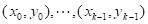
, trong đó hai pixel kề nhau trong chuỗi là liên thông (bao gồm cả pixel đầu và pixel cuối), độ dài biên pixel được định nghĩa là: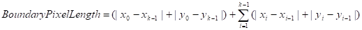
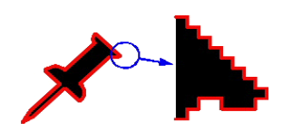
Đặc trưng 17: Chu vi (Perimeter).
Đặc trưng 18: Độ không tròn (Acircularity).
Đặc trưng 19: Độ không tròn chuẩn hóa (AcircularityRms).
Đặc trưng liên quan đến mức xám
Đặc trưng 20: Mức xám tối thiểu. Giá trị mức xám nhỏ nhất của tất cả các điểm bên trong Blob.
Đặc trưng 21: Mức xám tối đa. Giá trị mức xám lớn nhất của tất cả các điểm bên trong Blob.
Đặc trưng 22: Mức xám trung bình. Giá trị mức xám trung bình của tất cả các điểm bên trong Blob.
Đặc trưng 23: Mức xám trung bình tối đại dựa trên thực thể (Event-based). Ở đây "thực thể" nên được hiểu là Run-length. Do đó, đây là giá trị mức xám trung bình lớn nhất dựa trên các đoạn Run-length bên trong Blob.
Đặc trưng 24: Mức xám trung bình tối tiểu dựa trên thực thể. Tương tự, đây là giá trị mức xám trung bình nhỏ nhất dựa trên các đoạn Run-length bên trong Blob.
Các tham số khác
Xem phần giải thích tham số.
Khi kết quả thực thi của tất cả các vùng ROI đều là True, kết quả thực thi chung của công cụ sẽ là True; ngược lại, kết quả thực thi của công cụ sẽ là False.
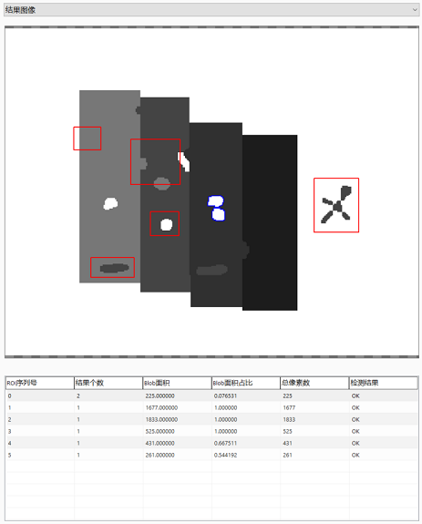
| Các mục cần lưu ý |
|---|
| 1. Công cụ Multi-Blob thường được sử dụng kết hợp với công cụ Định vị hình học (Geometric Matching). Sau khi công cụ định vị xác định được vị trí vùng đặc trưng cụ thể, công cụ Blob sẽ thực hiện kiểm tra và phân tích tại vị trí chỉ định trong vùng đó để nâng cao độ chính xác và hiệu suất kiểm tra. |
| 2. Khi sử dụng công cụ Multi-Blob, cần lưu ý vị trí đặt các vùng ROI. Nếu vùng ROI vượt quá phạm vi của hình ảnh (Out of bounds), việc phân tích Blob sẽ bị thất bại. |
| 3. Kết quả thực thi của công cụ Multi-Blob là phép giao (AND logic) kết quả của từng ROI. Khi kết quả thực thi của công cụ là False, các ROI có kết quả False sẽ hiển thị màu đỏ trên màn hình quan sát. Trên giao diện sản xuất, nhấp đúp vào ROI màu đỏ sẽ hiển thị giao diện Thuộc tính nâng cao (Advanced Properties) để tinh chỉnh trực tiếp các tham số tương ứng. |
| Tên tham số | Giải thích tham số |
|---|---|
| Bám đuổi mục tiêu | Có: Có thể liên kết với phép biến đổi tuyến tính 2D; Không: Thực thi công cụ theo vùng ROI được liên kết vào. |
| Vùng ROI | Vùng công cụ thực hiện kiểm tra, chia làm 9 loại: Toàn bộ hình ảnh, ROI Hình chữ nhật, ROI Hình chữ nhật Affine, ROI Hình tròn, ROI Hình vành khăn, ROI Hình Ellipse, ROI Đa giác, ROI Đường gấp khúc thay đổi và ROI Hình dạng tự do (Đa giác có các cạnh có thể biến thành đường cong). |
| Cực tính Blob | Cực tính Blob đề cập đến trạng thái chuyển đổi trắng đen giữa mục tiêu và nền, chia làm 2 loại: Blob đen - Nền trắng và Blob trắng - Nền đen. |
| Phương pháp phân đoạn | Trước khi phân tích Blob, hình ảnh phải được phân đoạn thành mục tiêu và nền. Công cụ Blob cung cấp 3 phương pháp phân đoạn: None (Nhập trực tiếp), Hard Threshold (Phân ngưỡng cứng) và Soft Threshold (Phân ngưỡng mềm). |
| Threshold | Giá trị ngưỡng cứng (Hard Threshold). |
| Phương pháp phân tích liên thông | Sau khi hình ảnh được phân đoạn thành mục tiêu và nền, phân tích liên thông sẽ tập hợp các pixel mục tiêu thành các vùng liên thông dựa trên thuộc tính kết nối của chúng. Có 3 phương pháp: Whole Image, Gray Scale và Labeled. |
| Cắt tỉa, Lấp đầy (Pruning/Filling) | Tham số này hiển thị khi phương pháp liên thông được chọn là Gray Scale hoặc Labeled, gồm 3 tùy chọn: Không, Cắt tỉa (Pruning) và Lấp đầy (Filling). Dựa trên diện tích tối thiểu được chỉ định, các Blob có diện tích nhỏ hơn mức này sẽ bị cắt tỉa bỏ hoặc lấp đầy vào các Blob lớn lân cận. |
| Hệ số pixel (Pixel Equivalence) | Diện tích = Tổng số pixel * Hệ số pixel² |
| Giới hạn trên tổng số pixel | Giá trị tối đa số pixel mà tất cả các Blob phát hiện được chiếm giữ, không được nhỏ hơn giá trị giới hạn dưới, phạm vi [0, 999999999]. Khi tổng số pixel của Blob nằm trong khoảng giới hạn, kết quả vùng kiểm tra là True, ngược lại là False. |
| Giới hạn dưới tổng số pixel | Giá trị tối thiểu số pixel mà tất cả các Blob phát hiện được chiếm giữ, không được lớn hơn giá trị giới hạn trên, phạm vi [0, 999999999]. Khi tổng số pixel của Blob nằm trong khoảng giới hạn, kết quả vùng kiểm tra là True, ngược lại là False. |
| Giới hạn trên số lượng kết quả | Số lượng Blob tối đa được phát hiện, không nhỏ hơn giới hạn dưới, phạm vi [0, 999999999]. Khi tổng số lượng Blob nằm trong khoảng giới hạn, kết quả vùng kiểm tra là True, ngược lại là False. |
| Giới hạn dưới số lượng kết quả | Số lượng Blob tối thiểu được phát hiện, không lớn hơn giới hạn trên, phạm vi [0, 999999999]. Khi tổng số lượng Blob nằm trong khoảng giới hạn, kết quả vùng kiểm tra là True, ngược lại là False. |
| Giới hạn dưới tỷ lệ diện tích | Tỷ lệ tối thiểu giữa diện tích tất cả Blob và diện tích vùng kiểm tra ROI, phạm vi [0.0, 1.0]. Khi tỷ lệ này nằm trong khoảng giới hạn, kết quả vùng kiểm tra là True, ngược lại là False. |
| Giới hạn trên tỷ lệ diện tích | Tỷ lệ tối đa giữa diện tích tất cả Blob và diện tích vùng kiểm tra ROI, phạm vi [0.0, 1.0]. Khi tỷ lệ này nằm trong khoảng giới hạn, kết quả vùng kiểm tra là True, ngược lại là False. |
| Giới hạn dưới diện tích | Giá trị diện tích tối thiểu của Blob, phạm vi [0, 999999999]. Khi diện tích của tất cả Blob nằm trong khoảng giới hạn, kết quả vùng kiểm tra là True, ngược lại là False. |
| Giới hạn trên diện tích | Giá trị diện tích tối đa của Blob, phạm vi [0, 999999999]. Khi diện tích của tất cả Blob nằm trong khoảng giới hạn, kết quả vùng kiểm tra là True, ngược lại là False. |
| Tính toán đặc trưng Momen | Nếu chọn "Có", công cụ sẽ tính toán các đặc trưng liên quan đến momen (Moment characteristics) và hiển thị kết quả trong cửa sổ giám sát, đồng thời các đặc trưng này sẽ tham gia vào thiết lập bộ lọc kết quả. |
| Tính toán đặc trưng Đường bao | Nếu chọn "Có", công cụ sẽ tính toán các đặc trưng liên quan đến đường bao (Contour characteristics) và hiển thị kết quả, đồng thời tham gia vào bộ lọc kết quả. |
| Tính toán đặc trưng Mức xám | Nếu chọn "Có", công cụ sẽ tính toán các đặc trưng liên quan đến mức xám (Gray-scale characteristics) và hiển thị kết quả, đồng thời tham gia vào bộ lọc kết quả. |
| Sắp xếp kết quả | Nếu chọn "Có", các tham số về phương thức sắp xếp và tiêu chí sắp xếp sẽ hiển thị để thực hiện sắp xếp danh sách kết quả đầu ra. |
| Lọc kết quả (Filtering) | Nếu chọn "Có", công cụ sẽ thực hiện thiết lập bộ lọc cho các tham số tương ứng và sàng lọc kết quả kiểm tra theo thiết lập đó. |
| Lọc Blob không hoàn chỉnh | Các Blob bị cắt ngang bởi biên của vùng ROI kiểm tra được coi là Blob không hoàn chỉnh. |
| Đảo ngược kết quả (Invert) | Nếu chọn "Có", kết quả thực thi của công cụ sẽ bị đảo ngược. Ví dụ: nếu kết quả gốc là False, sau khi đảo ngược sẽ thành True và ngược lại. |
| Lấp đầy Blob (Blob Filling) | Nếu chọn "Có", công cụ sẽ thực hiện lấp đầy màu trắng lên nền đen dựa trên thông tin vị trí, hình dạng, kích thước và hướng của mục tiêu phát hiện được. |
| Kiểm tra thuận nghịch | Có thể đồng thời phát hiện cả Blob đen và Blob trắng. |
| Hình ảnh đầu vào | Hiển thị hình ảnh chờ kiểm tra. |
| Chuỗi dữ liệu (Data Chain) | Hình ảnh đầu vào. |
| Biến đổi tuyến tính 2D | Các phép biến đổi tịnh tiến (translation), xoay (rotation) và thu phóng (scaling) của mục tiêu so với mẫu (template). |
| Tên tham số | Giải thích tham số |
|---|---|
| Hình ảnh đầu vào | Đầu ra gồm chiều rộng, chiều cao và kích thước pixel của hình ảnh, tương tự tham số hình ảnh đầu vào trong cửa sổ giám sát. |
| Số lượng kết quả | Đầu ra là số lượng kết quả Blob của từng ROI để các công cụ tiếp theo sử dụng, tương tự tham số số lượng kết quả trong cửa sổ giám sát. |
| Kết quả Blob | Xuất thông tin kết quả của từng ROI, bao gồm các đặc trưng cơ bản, đặc trưng liên quan đến momen, đặc trưng liên quan đến đường bao và đặc trưng liên quan đến mức xám, phục vụ cho các công cụ sau. |
| Tỷ lệ diện tích tất cả Blob | Đầu ra là tỷ lệ giữa diện tích Blob và diện tích vùng kiểm tra ROI của từng ROI, tương tự tham số tỷ lệ diện tích trong cửa sổ giám sát. |
| Tổng số pixel | Đầu ra là số lượng pixel mà các Blob chiếm giữ trong từng vùng ROI. |
| Diện tích | Đầu ra là diện tích của từng ROI, diện tích = tổng số pixel * hệ số pixel². |
| Số thứ tự ROI kiểm tra nghịch | Tập hợp các chỉ số (ID) của các ROI thực hiện kiểm tra nghịch (Inverse Detection). |
| Số lượng kết quả kiểm tra nghịch | Số lượng kết quả phát hiện của từng ROI thực hiện kiểm tra nghịch. |
| Tỷ lệ diện tích Blob kiểm tra nghịch | Tỷ lệ diện tích của tất cả các Blob phát hiện được trong mỗi ROI thực hiện kiểm tra nghịch. |
| Tổng số pixel kiểm tra nghịch | Tổng số pixel của các kết quả phát hiện trong mỗi ROI thực hiện kiểm tra nghịch. |
| Kết quả kiểm tra tất cả ROI | Tổng hợp kết quả phát hiện của cả kiểm tra thuận và kiểm tra nghịch. |
| Kết quả thực thi | Kết quả thực hiện của công cụ: hiển thị "OK" nếu thành công, "NG" (No Go) nếu thất bại, tương tự tham số kết quả thực thi trong cửa sổ giám sát. |
| Thời gian thực thi | Thời gian công cụ thực hiện tính toán. |
Tham khảo tại: “\Samples\Multi_Blob_Tool.gvp”.